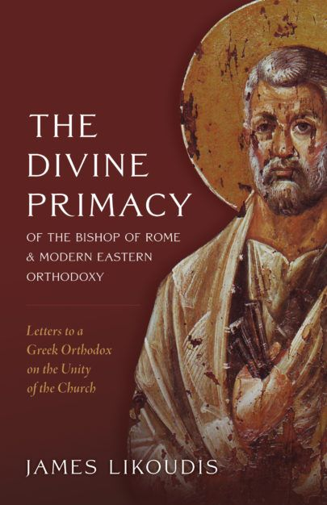

NEW!
The Divine Primacy of the Bishop of Rome
and Modern Eastern Orthodoxy:
Letters to a Greek Orthodox on the Unity of the
Church
A Book by Dr. JAMES LIKOUDIS
| TITLE | The Divine Primacy of the Bishop of Rome and Modern Eastern Orthodoxy:
Letters to a Greek Orthodox on the Unity of the Church (Revised New 3rd Edition re-Published on October 2023) |
| PUBLISHER | Emmaus Road Publishing |
| AVAILABILITY |
By contacting Emmaus Road Publishing on the link above, or can be purchased directly by clicking this link at St. Paul Center |
| FORMAT | Paperback, 482 pgs. - Size 5.5" x 8.5" - or eBook |
| PRICE | Paperback $29.95 each - or eBook $19.95 |
| A new revised and expanded 3rd Edition
with a new appendix, foreword by Dr. Robert Fastiggi, and after word by Eric Ybarra |
 |
Despite real progress made in ecumenical relations between Catholics and Eastern Orthodox, the last several years have seen an increase in bitter attacks on Papal Supremacy and Infallibility. In this newly revised and much expanded work, (over 480 pages), Dr. James Likoudis treats in detail Eastern Orthodox ecclesiology and replies to objections made to critical elements of Roman Catholic Doctrine on:
- the Pope's Primacy of Supremacy and Infallibility,
- the Procession of the Holy Spirit,
- the Filioque clause,
- the Dogma of the Immaculate Conception,
- Purgatory, and
- the Development of Doctrine.
With "The Divine Primacy of the Bishop of Rome and Modern Eastern Orthodoxy: Letters to a Greek Orthodox on the Unity of the Church", which includes much added material refuting the allegations and misconceptions made by a number of Eastern Orthodox polemicists and writers, James Likoudis, the author, contributes to today's Catholic-Orthodox dialogue with an eloquent, clear and pragmatic demonstration of the existence of a Papal Primacy of Universal Jurisdiction in the "undivided Church of the First Millennium".
| By Land Mail | 593 Allison Dr., Ann Arbor, MI 48103 |
| By E-Mail |
| ENDORSEMENTS AND REVIEWS OF THIS BOOK |
|
By Tim Staples Click Here By Philip Blosser Click Here By Michael Lofton Click Here |
. |

About Dr. James Likoudis
James Likoudis is an expert in Catholic apologetics. He is the author of several books
dealing with Catholic-Eastern Orthodox relations, including his most recent "The Divine
Primacy of the Bishop of Rome and Modern Eastern Orthodoxy: Letters to a Greek Orthodox
on the Unity of the Church." He has written many articles published by various religious
papers and magazines.
He can be reached at: , or visit Dr. James Likoudis'
Homepage